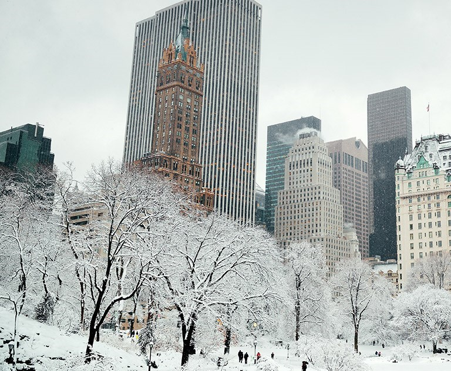
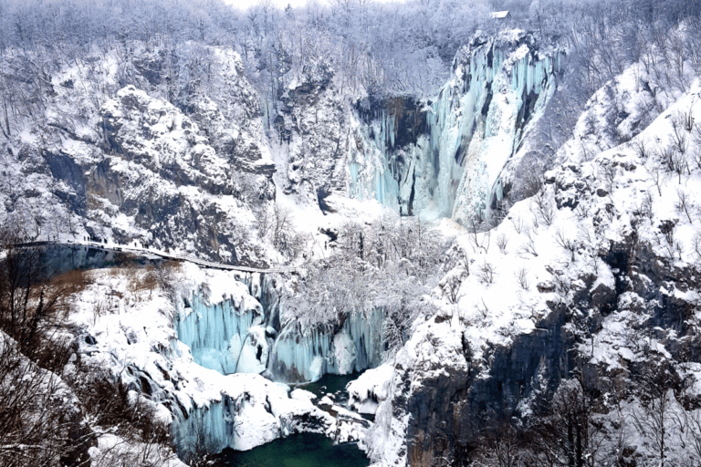
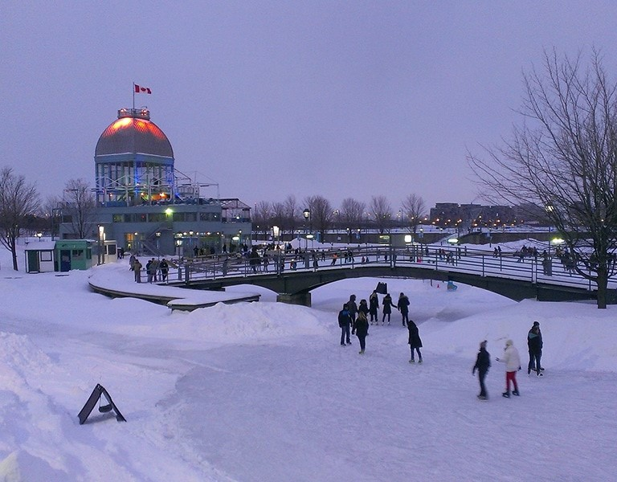

inverno nos Estados Unidos é uma das épocas mais lindas, e charmosas do país.Em muitas cidades, a paisagem coberta de neve e as temperaturas baixastornam as experiências dos turistas ainda mais incríveis.O inverno nos EUA oferece uma série de atrações desde paisagens naturais e urbanas cobertas de neve até estações de esqui com excelente infraestrutura para esportes de inverno. Quem viaja para o país entre os meses de dezembro e março tem a sensação de estar dentro dos filmes e séries ambientados nessa época do ano.
O Inverno é também uma excelente altura para visitar os muitos mercados de férias da Croácia. Os mercados de férias na Croácia são um óptimo local para encontrar presentes únicos para amigos e familiares.Também é interessante ver a transformação da natureza. Grande parte das árvores perdem as folhas e seus galhos são cobertos por milhares de flocos de gelo. É possível que algumas trilhas estejam fechadas por questões de segurança, mas a visita vale muito a pena de qualquer forma. Não perca, pois esse é um dos mais famosos pontos turísticos da Croácia
Quando a neve começa a cair, o país se transforma em uma terra mágica repleta de atrações.Com paisagens cobertas de branco, estações de esqui de classe mundial, festivais animados e belas cidades sob a neve.No inverno, a maioria das pessoas que buscam fazer intercâmbio no Canadá, também procuram por esportes como esqui, patinação no gelo e snowboard.Por isso, o Parque Nacional de Banff é perfeito, sendo um dos lugares que possuem uma estrutura incrível para praticar esportes no inverno.Além disso, ele é considerado patrimônio mundial da Unesco, graças às suas grandes reservas naturais. Com lagos congelados, e montanhas cobertas de neve, o Parque Nacional de Banff fica localizado na província de Alberta.
